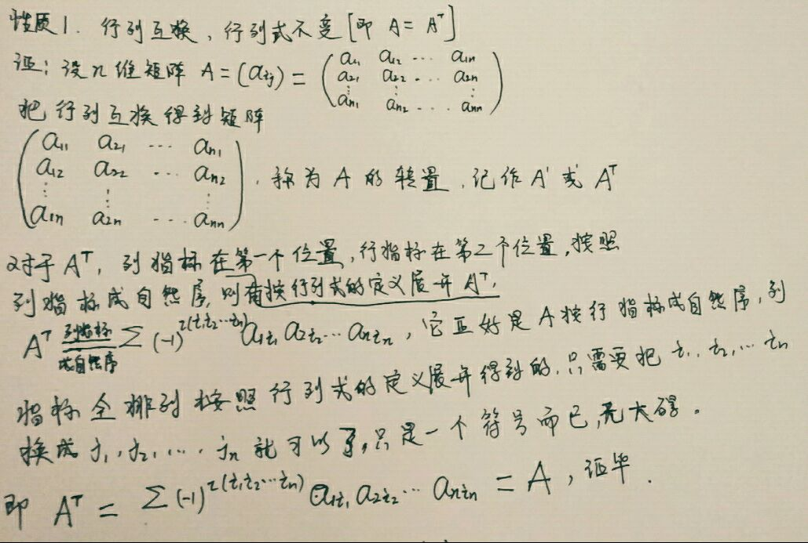
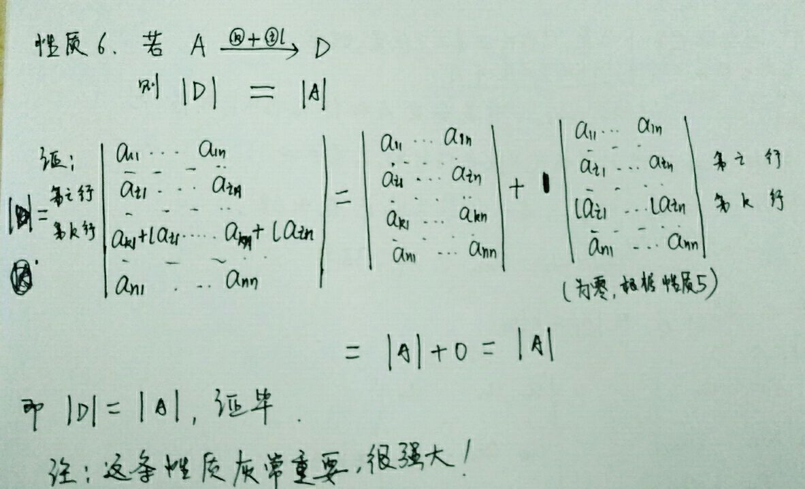

二、行列式(8-18)排列 行列式性质
关于数域：有理数域是最小的数域，复数域是最大的数域
现在，再次回顾最开头的证明的判断线性方程组的解的个数的定理，我们发现，判别的前提都是得先把线性方程组的增广矩阵经过初等行变换化成阶梯型，但这样子太麻烦了，而且都马上能解出来了，如果仅仅是判断线性方程组的解的个数，这种方法实在是$low$爆了，所以现在咱们要寻找更简单的判断方法
先来看一个二元线性方程组的例子：
没错，我们可以看到，当该二元线性方程组的系数矩阵行列式不为零时，该线性方程组有唯一解，事实证明，这个结论对于更高阶的系数矩阵行列式（也可以说是对$n$元线性方程组）是完全$ok$的，那么我们该如何证明呢？
此处先留个悬念，接下来先看一下关于$n$阶行列式的一些知识：
排列
逆序数：一个排列（由$1,2,…,n$组成的一个有序数组称为一个$n$级排列）中逆序（在一个排列中，如果一对数的前后位置与大小顺序相反，那么它们就称为一个逆序）的总数就称为这个排列的逆序数.
排列的奇偶性：逆序数为偶（奇）数的排列叫做偶（奇）排列.
对换：把一个排列中某两个数的位置互换，而其余的数不动，就得到另一个排列，这样的一个变换称为一个对换.（
注意：是任意两个数，不一定相邻哦，下面的定理１是为了证明方便才进行的两个相邻元素之间的对换，不要搞混，那只是为了证明.）Th1. 对换改变排列的奇偶性
证明：
先来看两个数相邻的情况：
排列（１）与排列（２）逆序数相差１，从而两者的奇偶性相反；
再来看一般情况：
由排列（３）变换到排列（４），总共经过了$(S+1)+S=2S+1$次相邻两个元素之间的对换，其中$i$移动到$j$的右边需要与它相邻的元素做$S+1$次对换，而$j$在$i$移动到其右侧后，需要再向左与其相邻元素做$S$次对换方可到达原来$i$所在的位置，而$2S+1$是奇数，也就是说总共做了奇数次相邻两元素之间的对换，从而排列（３）与排列（４）的奇偶性相反，证明完毕.Th2. 任意一个$n$级排列$j_1j_2…j_n$与自然序列$123…n$可以经过一系列的对换互变，且所做对换的次数与原来的排列$j_1j_2…j_n$的奇偶性相同.
证明：
假设$j_1j_2…j_n$是奇排列，由于$123…n$ ，也就是说排列的奇偶性在经过$S$次对换后变化了，所以一定做了奇数次对换，故$S$为奇数.同理若假设一开始的$j_1j_2…j_n$是偶排列，由于$j_1j_2…j_n$也是偶排列，所以做了偶数次对换，即$S$此时为偶数，证明完毕，很简单吧.
$n$级行列式
$n$级行列式是$n!$项的代数和
- 对于上述$n$级行列式，我们可以取出其中任意一项$(-1)^{ι
(j_1j_2…j_n)}a_{1j_1}a_{2j_2}…a_{nj_n}$（从全部的$n!$项中取,注意到这里还是按照行指标顺序排列，列指标进行全排列的那种）可以得到以下结论：
证明如下：
那么这个结论有什么用处呢？继续往下看你就明白了
我们把之前任取的$(-1)^{ι
(j_1j_2…j_n)}a_{1j_1}a_{2j_2}…a_{nj_n}$
搬过来先，然后按照证明里面的套路分别将行指标和列指标做对换，和证明中唯一不同之处在于，我们现在让列指标对换成自然排列（$12…n$），那么其逆序数为零，即$ι
(12…n)=0$.好，现在开始代上述结论公式，则有
$detA=\sum{(-1)^{ι
(j_1j_2…j_n)}a_{1j_1}a_{2j_2}…a_{nj_n}}=\sum{(-1)^{ι
(i_1i_2…i_n)+ι(12…n)}a_{i_11}a_{i_22}…a_{i_nn}}$
$=\sum{(-1)^{ι
(i_1i_2…i_n)}a_{i_11}a_{i_22}…a_{i_nn}.}$
观察最右侧的式子，可以看出，它是把列指标按照自然顺序排列，而且符号由行指标的逆序数决定，这和我们之前（第一个等号右面的那一项）先将行指标按自然顺序排列，而符号由列指标的逆序数决定正好相反，但是，它们却是相等的，都代表着行列式$A$，即上式中的$det Ａ$.
这就不禁让我们思考，行和列之间似乎有着某种对称的关系.事实上的确如此，并且据此我们还可以得到关于行列式的一些性质，下面就来看一下这些有用的性质都是何方神圣.
行列式的性质：
性质１． 行列互换，行列式不变（也就是说行列式的转置的值和行列式的值本身是等的）；
性质２． 以一数乘行列式的一行就相当于用这个数乘次行列式.（如果行列式中一行为０，那么行列式为零)；
性质３． 如果某一行是两组数的和，那么这个行列式就等于两个行列式的和，而这两个行列式除这一行以外全与原来行列式的对应行一样；
性质４． 如果行列式中有两行相同，那么行列式为零．所谓两行相同就是说两行的对应元素都相等；
性质５． 如果行列式的两行成比例，那么行列式为零；
性质６． 把一行的倍数加到另一行，行列式不变；
性质７． 对换行列式中两行的位置，行列式反号．
应用行列式的性质，可以解决大部分的行列式计算，这里不再列举
- $n$级矩阵$A=(a_{ij})$，划去$A$的$(i,j)$元所在的第$i$行和第$j$列,剩下的元素按照原来的顺序构成一个$n-1$阶行列式，称之为$A$的$(i,j)$元的余子式，记做$M_{ij}$，令$A_{ij}=(-1)^{i+j}M_{ij}$，称之为$A$的$(i,j)$元的代数余子式.
有了代数余子式的概念之后，计算行列式就变得简单起来，或者说我们又找到了一个新的计算行列式的方法，继续向下看.
下面惊现４个定理！ - Theory：$n$级矩阵$A=(a_{ij})$的行列式$|A|=a_{i1}A_{i1}+a_{i2}A_{i2}+…+a_{in}A_{in}$=$\sum_{j=1}^n{a_{ij}A_{ij}}$，其中$i=1,2,…,n$.
证明：取$A$的第$i$行
将第$i$行的元素排在第一个位置，其他的还是从小到大按照行指标成自然顺序排列，即$|A|＝\sum_{jk_1…k_{i-1}k_{i+1}…k_n} (-1)^{.{(i-1)+(j-1)}+ι(k_1…k_{i-1}k_{i+1}…k_n)}a_{ij}a_{1k_1}…a_{i-1,k_{i-1}}a_{i+1,k_{i+1}}…a_{nk_n}$
＝$\sum_{j=1}^n (-1)^{i+j}a_{ij}*\sum_{k_1…k_{i-1}k_{i+1}…k_n}(-1)^{ι(k_1…k_{i-1}k_{i+1}…k_n)}a_{1k_1}…a_{i-1,k-1}a_{i+1,k+1}…a_{nk_n}$
＝$\sum_{j=1}^n (-1)^{i+j}a_{ij}M_{ij}$
＝$\sum_{j=1}^n a_{ij}A_{ij}$，这样子完成了上述定定理的证明.
什么？没太懂？好吧，来解释一下：
第一个等式是第$i$行的元素排在第一个位置，其他的还是从小到大按照行指标成自然顺序排列，所以可以先写出后面的那些以及求和符号的底部那些，关键是逆序数的确定，这里又用到了前面刚证明的结论（我指的是行列式性质上面的那个手写证明哦），也就是（－１）的幂次等于行指标的逆序数＋列指标的逆序数，可以向上翻一下，那咱们现在就来看看：$(i-1)$是行指标的逆序数（因为原来的行指标是按照自然顺序排列，逆序数是０，后来咱们把第$i$行放在了最前面，所以从第二行往右（后），比$i$小的行指标有$1,2,…,i-1$，一共$i-1$个），同理$(j-1)$是此时列指标中的$j$的逆序数，而后面的$ι(k_1…k_{i-1}k_{i+1}…k_n)$是列指标中除去$j$之外的其他元素的逆序数，相当于把列指标拆成了两项，你可能会有疑问，这里为什要把列指标拆开而不直接写成$ι(jk_1…k_{i-1}k_{i+1}…k_n)$呢？那是因为，我们要证明的目标式是含有划掉第$i$行第$j$列，其余的元素按照原来的顺序所构成的行列式（即余子式）.
第二个式子是提取公因式，把所有公因式都放在左边，由于取定了行之后，要求和遍历每一列，因此提取出$\sum_{j=1}^n$，由于我们取定了第$i$行，所以首先可以把$a_{ij}$提出来，最后是$(-1)$的幂次，这个$(i-1)+(j-1)=i+j-2$可以直接写成$i+j$(因为2是偶数)，$i$确定了，$j$可以遍历，所以提取出来了$(-1)^{i+j}$，剩余的就统统放在右边了，这也就是第二个式子.
第三个式子就不必多说了.这个定理也就称为n阶行列式按一行展开同样的，对于列也有一样的性质 - $n$级矩阵$A=(a_{ij})$的行列式$|A|=a_{1j}A_{1j}+a_{2j}A_{2j}+…+a_{nj}A_{nj}$=$\sum_{i=1}^n{a_{ij}A_{ij}}$，其中$j=1,2,…,n$.
证明：
按第$j$列展开，
$|A|=|A’|=a_{1j}A_{1j}+a_{2j}A_{2j}+…+a_{nj}A_{nj}$=$\sum_{i=1}^n{a_{ij}A_{ij}.}$,下面的图形象的说明了可以这样做的原因这个定理也就称为n阶行列式按一列展开
以上定理统称为行列式按一行(列)展开.
接下来我们想一下，以上的定理都是某元素乘以自身的代数余子式，结果等于行列式的值，那么如果我们用该元素乘以与该元素在同一行或同一列的某个元素的代数余子式而不是去乘以该元素自身的代数余子式，那么结果会是多少呢？答案是零！我们可以来证明一下：
这个定理对于列也同样成立，即$n$级矩阵$A=(a_{ij})$，当$i!=j$时，$a_{1j}A_{1l}+a_{2j}A_{2l}+…+a_{nj}A_{nl}=0$
以上总共４个定理，前两个称为行列式按一行（列）展开，结果仍是行列式本身的值，后两个是变形，不再乘以自身的代数余子式了，结果是０，这些在后面都有很重要的应用
下面介绍范德蒙德行列式
- 形如
的行列式称之为”$n$级的范德蒙德行列式”,并且该行列式的结果为
也就是说“对任意的$n$(n>=2)，$n$级范德蒙德行列式等于$a_1,a_2,…,a_n$这$n$个数的所有可能的差$a_i-a_j$($1<=j<i<=n$)的乘积”，用数学归纳法即可证明之.
现在，是时候回到本章最开始提出的问题了：$n$元线性方程组的系数矩阵行列式不为零时，该线性方程组有唯一解的证明：
吐槽：绕了这么一大圈，终于证出来了，主要用到了之前证明的行列式的那些性质，按照一行（列）展开以及第一章提到的比较笨的方法（直接化增广矩阵为阶梯型，都快计算出来了）.
- 而对于$n$阶齐次线性方程组来说，应用上面证明的定理，自然有较好的性质，这也就是克莱默法则的第一部分
若只有零解（即只有唯一解），则其系数矩阵行列式不为０；
若有非零解（即有无穷多个解），则其系数矩阵行列式等于０.